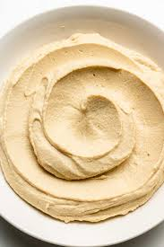

Hummus

Making your own Hummus
Hummus is a versatile and tasty spread that's super easy to make! All you need is a can of chickpeas or garbanzo beans!
This simple recipe will guide you step by step through the process of making your very own hummus using common house hold ingredients.
Ingredients
- chickpeas
- garlic
- salt
- olive oil
- water
steps
- Add chickpeas, garlic, salt and olive oil to a blender
- Blend the ingredientsuntil a paste starts to form
- Optionally add water a little at a time if you prefer a looser consistency
- Move blender contents to a dish and serve!